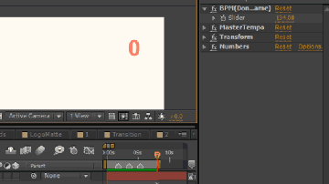

製作需要對拍子的影片時的方便小工具

使用方法
1.放置於以下資料夾後重啟AE：[AE安裝資料夾]\Support Files\Presets\
2.於AE新增純色圖層（Solid） 建議不用太大，200x200就可以了
3.從 Effects & Presets 面板選擇 V_Metronome 並套用至該純色圖層
4.配合你的音樂更改BPM參數（不知道節拍可事先詢問音樂製作人，或利用MixMeister BPM Analyzer之類的程式分析）
5.將該圖層開始時間對齊至你音樂的第一拍上
6.建議可以按右鍵把圖層改成「Guide Layer」這樣就不會不小心把它輸出了～